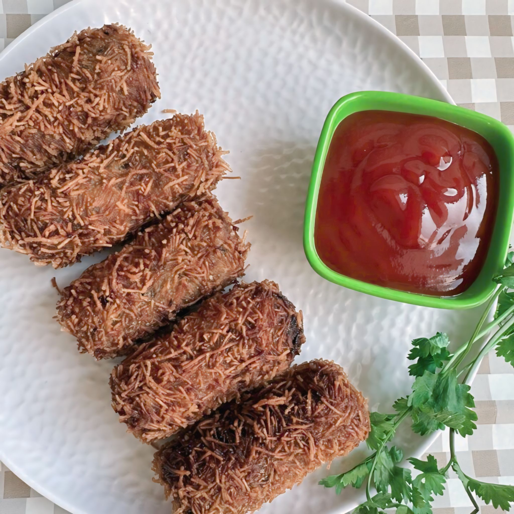
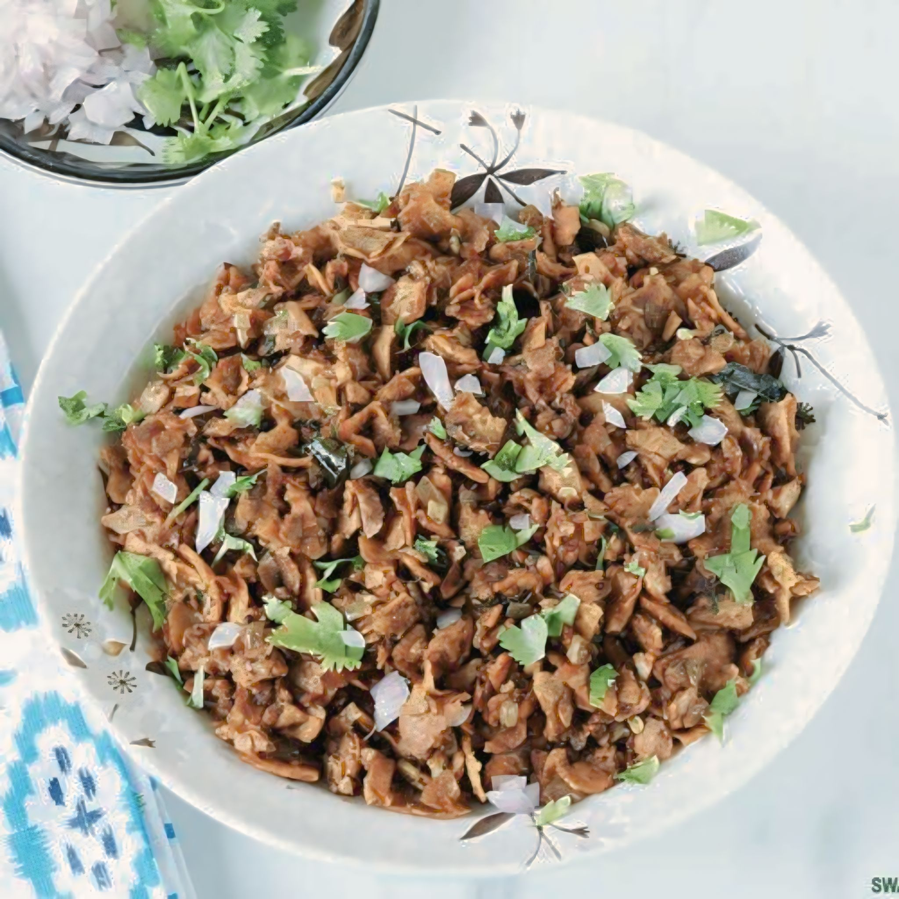
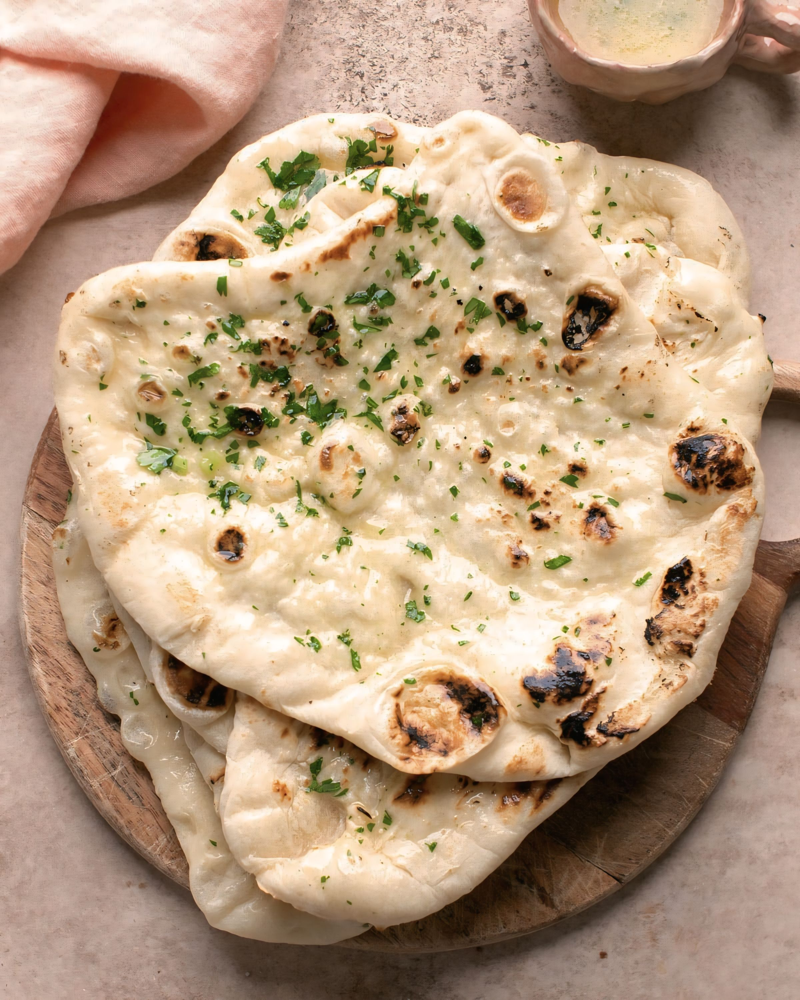

CUTLET
𝙑𝙀𝙂𝙇𝙊𝙇𝙇𝙄𝙋𝙊𝙋
𝙋𝙄𝙉𝙀𝘼𝙋𝙋𝙇𝙀 𝙍𝙊𝙇𝙇

𝙄𝘿𝙇𝙄

𝘾𝙃𝙐𝙏𝙉𝙀𝙔 4𝙏𝙔𝙋𝙀

𝙒𝙃𝙄𝙏𝙀 𝙍𝙄𝘾𝙀

𝙆𝙐𝙈𝘽𝙐 𝘾𝙐𝙍𝘿𝙍𝙄𝘾𝙀

𝙎𝘼𝙈𝘽𝘼𝙍

𝙈𝙐𝙎𝙃𝙍𝙊𝙊𝙈 𝘽𝙄𝙍𝙄𝙔𝘼𝙉𝙄 𝙒𝙄𝙏𝙃 𝙊𝙉𝙄𝙊𝙉 𝙍𝘼𝙄𝙏𝘼

𝙆𝙊𝙏𝙃𝙐 𝙋𝙊𝙍𝘼𝙏𝙏𝘼

𝙉𝘼𝘼𝙉

𝙋𝘼𝙉𝙀𝙀𝙍 𝘽𝙐𝙏𝙏𝙀𝙍 𝙈𝘼𝙎𝘼𝙇𝘼